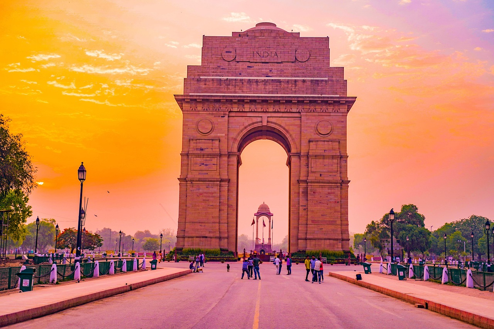

1. The India Gate

Right in the heart of the city stands the majestic India Gate, a
42-meter-high triumphal arch. It was solemnly inaugurated in 1931 in
the colonial Lutyens style as a national memorial.
The monument honors the tens of thousands of Indian soldiers who
fell in the First World War. Beneath the arch burns the eternal
flame, honoring the country’s immortal soldiers.
Today, families, street vendors, and travelers gather here in the
evenings amidst lush green lawns.